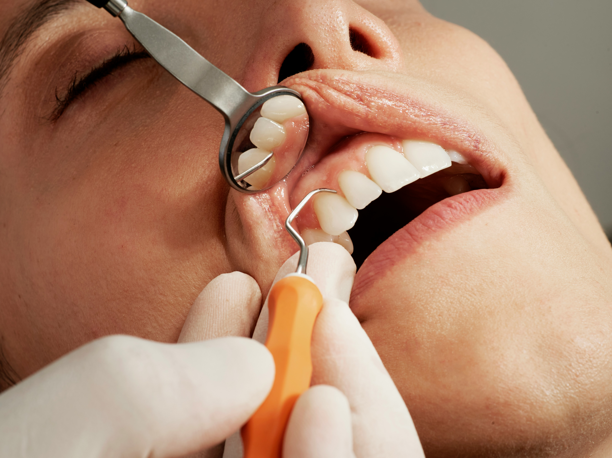
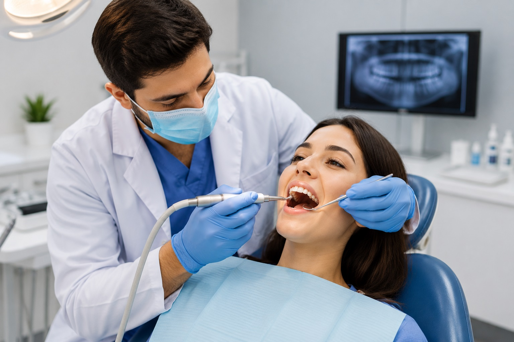
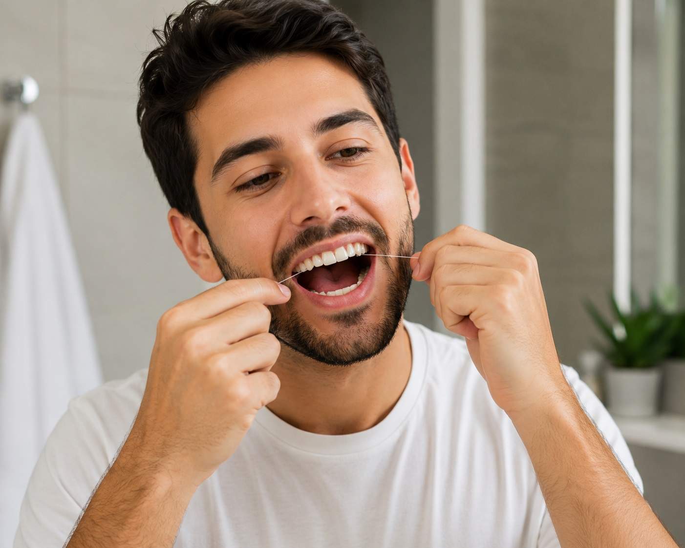

★★★★★
"My teeth feel so clean and fresh after every visit. Dr Deepesh always explains what he finds and gives helpful tips. Very thorough."
Preventive Dentistry
The simplest, most powerful way to protect your smile — routine exams and professional cleaning that keep your teeth and gums healthy for life.

NABH Certified — patient safety and quality of care
Learn more
A dental checkup and cleaning is a routine preventive visit where your dentist examines your teeth and gums and professionally cleans away plaque and tartar that daily brushing can't remove.
During the checkup, Dr Agrawal inspects your teeth, gums, and mouth for early signs of decay, gum disease, and other problems — often catching issues long before you'd notice them.
The cleaning (also called scaling and polishing) removes hardened tartar and surface stains, leaving your teeth smooth, fresh, and healthy. Together, these visits are the foundation of a lifetime of good oral health.
Skipping routine visits allows small problems to grow. Regular checkups and cleanings protect you in several important ways:
Brushing and flossing at home are essential — but they can't do everything a professional cleaning does. Here's how they compare:
| Feature | Home Brushing | Professional Cleaning |
|---|---|---|
| Plaque removal | Removes soft plaque you can reach | Removes plaque even in hard-to-reach areas |
| Tartar removal | Cannot remove hardened tartar | Removes hardened tartar with special tools |
| Early detection | No professional examination | Dentist checks for decay and gum disease |
| Stain removal | Limited surface stain removal | Polishing lifts stains for a brighter smile |
| Tailored advice | General guidance | Personalised tips based on your mouth |
Home care and professional cleanings work together. During your visit, Dr Deepesh Agrawal will also show you how to get the most from your daily routine.
A routine visit is quick, comfortable, and usually completed in a single appointment. Watch the short walkthrough below, then read what to expect at each stage.
A step-by-step look at a professional dental checkup and cleaning.
Dr Agrawal carefully examines your teeth, gums, and mouth, checking for signs of decay, gum disease, and other concerns. Digital X-rays may be taken if needed to see between and below the teeth.
This is your chance to raise any concerns — from sensitivity to appearance — so they can be addressed.
Using gentle ultrasonic and hand instruments, hardened tartar and plaque are removed from the surfaces of your teeth and along the gum line.
This is the key step that daily brushing simply can't achieve, protecting your gums from disease.
Your teeth are polished with a smooth paste to remove surface stains and leave them clean and shiny. This also makes it harder for plaque to build up again quickly.
Your smile feels noticeably fresher and looks brighter straight away.
Dr Agrawal shares personalised tips for your daily routine and, if anything needs attention, explains your options clearly.
You'll also be advised on when to return for your next checkup to keep your smile healthy.

Good daily habits between visits keep your teeth and gums in great shape:
₹2,000 per visit
The cost depends on whether you need a routine cleaning or more thorough scaling, and whether X-rays are required. Because every mouth is different, we provide a clear, no-obligation quote after your examination.
Routine checkups are the most affordable way to protect your smile and avoid costly treatments later. Ask us about regular checkup plans during your visit.
Prices are indicative and confirmed only after an in-person examination.
"My teeth feel so clean and fresh after every visit. Dr Deepesh always explains what he finds and gives helpful tips. Very thorough."
"Went for a routine cleaning and they caught a small cavity early, saving me from a bigger problem. Painless and quick."
"Years of stains gone after a scaling and polish. The clinic is spotless and the staff are lovely. I go every six months now."
For most people, every six months is ideal. Some patients with specific gum or dental needs may be advised to visit more frequently. Dr Agrawal will recommend the right schedule for you.
No, professional cleaning is generally painless. You may feel some mild sensitivity if there's a lot of tartar buildup or gum inflammation, but the process itself is gentle.
Brushing and flossing remove soft plaque, but once it hardens into tartar it can only be removed with professional tools. Regular cleanings prevent this buildup from harming your gums.
Cleaning removes surface stains and buildup, which often makes teeth look noticeably brighter. For a dramatic change in shade, professional whitening is the better option.
Not always. X-rays are taken only when needed to check between teeth or below the gum line. Dr Agrawal will advise if they're necessary for your checkup.
Bleeding gums are often an early sign of gum inflammation. A checkup and cleaning can address the cause, and we'll show you how to care for your gums at home.
Book a checkup and cleaning with Dr Deepesh Agrawal and give your teeth and gums the care they deserve — the easy way to prevent bigger problems.
Malviya Dental Assistant
Powered by AI